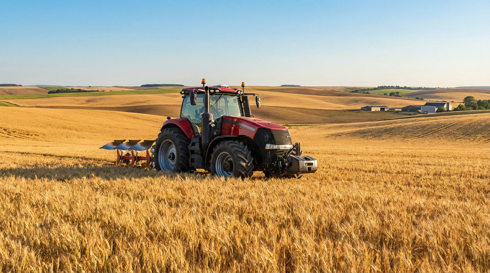

Farmers and ranchers rely on financing to purchase tractors, combines, and equipment—and to cover seed, fuel, livestock, and operating costs. Axiant Partners connects agricultural businesses with lenders offering equipment financing, SBA loans, working capital, and more. Whether you grow row crops, run livestock, or operate a specialty operation, we match you with financing that fits your operation and seasonal cash flow.
Industry Overview
Agricultural businesses face high capital requirements for tractors, combines, and specialized equipment. Seasonal revenue cycles—planting, growing, harvest—create cash flow gaps between input costs and crop or livestock sales. Many farmers and ranchers need financing to acquire or replace equipment without draining reserves. Working capital helps cover seed, fertilizer, fuel, and labor during the growing season when income is delayed.
Tractors and combines can cost $200,000–$500,000 or more. Equipment financing and working capital loans help agricultural businesses grow their operation and manage seasonal expenses. SBA loans support longer-term needs like real estate, land acquisition, and business expansion, while lines of credit provide flexibility for inputs and operating costs.

How Farmers Use Financing for Their Business
Farmers and ranchers use financing to fund equipment, inputs, and land. Many finance tractors, combines, and harvesters through equipment loans—spreading the cost of $200,000+ machines over their productive life. Operating loans cover seed, fertilizer, fuel, and labor during the growing season when crop or livestock income is still months away. SBA loans support land acquisition, barns, grain storage, and ranch improvements.
Seasonal revenue—planting, growing, harvest—creates natural cash flow gaps. A row-crop farmer might use a line of credit to fund spring planting before fall harvest sales. A livestock operation might finance a new tractor or hay equipment to improve efficiency. Whether expanding acreage, upgrading machinery, or managing seasonal expenses, farmers use financing to keep the operation running and growing.
Agricultural Business Financing Options
Farmers and ranchers need financing for tractors, combines, inputs, and land. Whether you're searching for farm equipment financing, agricultural loans, or farm operating loans, the right product depends on your use of funds and timeline.
Common Agriculture Equipment That Businesses Finance
Farmers and ranchers frequently finance tractors, combines, and specialized equipment. Below are common types, typical cost ranges, and why businesses finance them.

Tractors
Tractors power planting, tillage, haying, and material handling. New row-crop and utility tractors typically cost $80,000–$400,000 or more depending on horsepower and features. Many farmers finance tractors to add capacity or replace aging units without large upfront outlays.
How to finance a tractor
Combines
Combines harvest grain, corn, soybeans, and other row crops. New combines typically cost $300,000–$500,000 or more. Financing helps farmers add or replace harvest capacity and match payments to seasonal revenue.
How to finance a combine
Skid Steers
Skid steers handle feeding, material handling, and cleanup on livestock and crop operations. They typically cost $25,000–$75,000. Financing helps farmers add versatile equipment for daily tasks.
How to finance a skid steer
Hay Balers
Hay balers produce round or square bales for livestock feed and sale. Balers typically cost $20,000–$80,000 or more. Financing helps livestock and hay producers add or upgrade baling capacity.
How to finance a hay baler
Sprayers
Sprayers apply fertilizer, herbicides, and pesticides to crops. Self-propelled and pull-type sprayers range from roughly $30,000 to $400,000 or more. Financing helps farmers improve application efficiency and crop protection.
How to finance a sprayer
Grain Handling & Storage
Grain augers, conveyors, and bins move and store harvested grain. Equipment costs range from roughly $10,000 to $100,000 or more depending on capacity. Financing helps farmers add storage and handling to improve marketing flexibility.
How to finance grain equipmentEquipment Financing Guides for Farmers
Farmers considering equipment loans often ask these questions. Our guides cover credit requirements, used equipment, rates, and approval timelines. For equipment-specific guides, see Equipment by Type. For a full overview, see Equipment Financing.
Apply for Agriculture Business Financing
Agricultural businesses need financing that fits seasonal cycles and cash flow. Axiant Partners connects farmers and ranchers with lenders that offer equipment loans, working capital, SBA loans, and more. Submit your information once and we match you with programs suited to your business profile. Get matched with a lender or contact our team to discuss your needs.